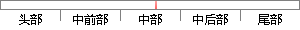

区块链或者说比特币的出现解决了上述难题，中本聪的论文中提出了一种完全通过点对点技术实现的电子现金交易系统。
片段位置图

相似结果|
相似片段 1：通胀找寻财富保值途径的心理。[5]二、比特币发展的理论依据与分析2008 年，中本聪在网上发布了一篇论文《比特币：一种点对点的电子现金系统》，[6]在论文中他提出了一种完全通过点对点技术实现的电子现金
|
※ 片段修改建议 ※
近似词参考：- 出现：呈现 泛起 涌现
- 解决：办理
- 难题：困难
- 完全：彻底 完整
- 通过：经由过程
- 技术：手艺 技能
系统自动生成语句：区块链或者说比特币的呈现办理了上述困难，中本聪的论文中提出了一种彻底经由过程点对点手艺实现的电子现金交易系统。
注：本片段修改建议为系统自动生成，仅供参考。